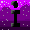

Feliz cumpleaños♡
Feliz cumpleaños mi niña preciosa, te adoro demasiado. Me has hecho muy feliz todo este tiempo, y me has ayudado muchisimo mi niña preciosa. Te amo demasiado, y espero, de verdad deseo que te guste mucho este regalo. Ahora mismo estoy escribiendo durante la fase inicial del desarollo de la página, y espero que te encante♡. En esta página voy a incorporar todas las herramientas que debes tener por si algún día necesites ayuda y no estoy ahí. (Cosa que nunca va a pasar, porque siempre estaré ahi jsjsj). Hice varios apartados que espero que te ayuden. Iré añadiendo más apartados a la página para que no te quedes siempre con lo mismo.
toy feli
ves que arribita en la pestaña hay un icono que es el este chikito , creo que me salio bonito, es una "i" d iesi, y ahora lo voy a hacer pero mas grande, porque como ese es chiquito, no me gusta tanto jsjsj

ya litos jsjsjs no se si es mejor igual ta chikito
Bueno, quedó feo lo de arriba, pero da igual. Te doy algunas instrucciones para que navegues más facil en la página. Aquellas cosas que esten resaltadas en verde es porque son importantes o recomendadas por mi. Me interesa que le eches un ojo a las herramientas que te dejé, ya que te ayudarán con tu computadora. Son herramientas complicadas, la verdad, pero tu sabes que te agobia mucho tener tu computadora lenta y, la verdad es que aplicandole esas correcciones que te explico en esas guías la van a acelerar como nunca.